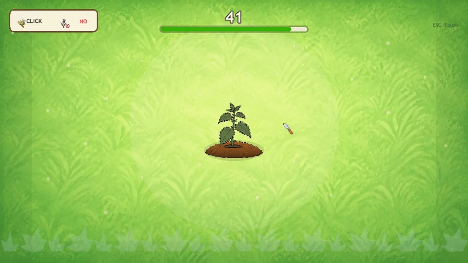

Small50 GDDs
A compact core task
One main action or a small set of mechanics, with clear success, failure, and feedback.

Game design documentBloom or Weed
- 01Click or ignore
Click an active flower. Let a weed expire without clicking.
- 02Show the outcome
A correct click bursts into petals. A correct ignore shows a mint check.
- 03Finish the run
At 45 seconds, discard any active icon unscored and show Results.
One repeated decision
IconClick / ignoreFeedbackAccuracy
14,085Mean tokens / GDD
54.2Mean outcome requirements